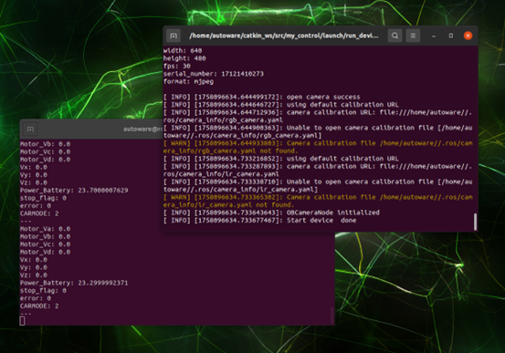
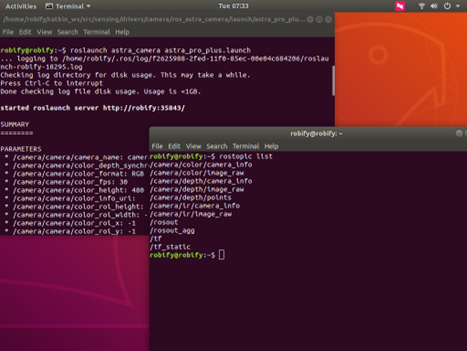
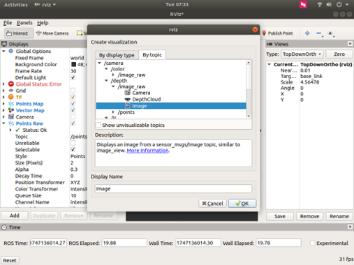
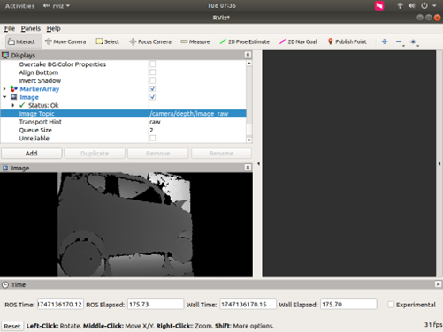
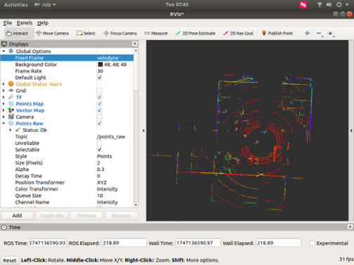
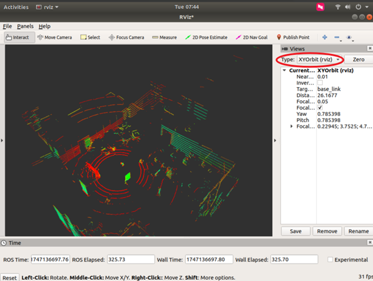
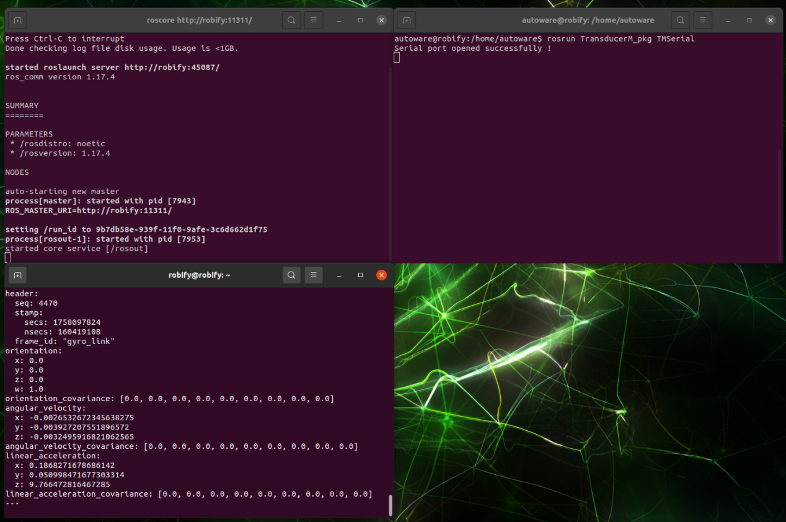
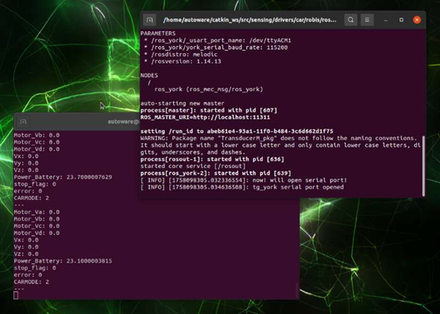

🛠️ Initialization of chassis and sensor drivers
Before using other functions of the RobiS robot, it's necessary to activate essential hardware modules such as the chassis drive, LiDAR, and IMU.
🚀 Start Docker
run the following command:
You can view the corresponding data by subscribing to mec_car.

🧩 Start Drivers Individually
If you need to start each component separately, use the following commands in separate terminals:
📹Depth Camera Sensor

Open a new terminal, type rviz and press Enter. In the lower-left corner, click “Add”, choose “By topic”, and select the camera image topic corresponding to your camera.

After adding, you can see the camera information in the lower-left corner. In the topic displayed under “Image”, you can choose among depth information, RGB image, and infrared data.

🔄 LiDAR Sensor

On the right-hand side, select the display Type for the point-cloud data and change it to XYOrbit to view it as a 3-D point cloud.

📡 IMU Sensor

You can view the corresponding data by subscribing to robot_imu.
🧭 Chassis driver

After starting, you can publish motion-control topics to make the robot move forward, backward, etc., as shown below
rostopic pub /cmd_vel [tab] [tab] #Press the Tab key twice and modify the linear velocity (x-axis speed).

💡 Tip: You need to confirm that the remote control is in "上位机" (host-computer) mode and that the emergency stop has been released.
Once the drivers are active, you can proceed to 2D mapping, navigation, or autonomous operations.
Please refer to the accompanying video.